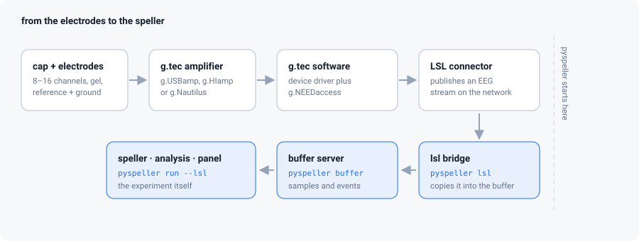

The g.tec amplifier
Drivers, g.NEEDaccess, Lab Streaming Layer, and how to prove real EEG is reaching the speller — before a participant is waiting.

The hardware
| Model | Typical use | Notes |
|---|---|---|
| g.USBamp | 16 channels, USB, research workhorse | needs its own driver; very common in teaching labs |
| g.HIamp | up to 256 channels | same software family, more channels |
| g.Nautilus | wireless, 8–64 channels, gel or dry (g.SAHARA) | a base station on USB, the headset on the participant |
| Unicorn Hybrid Black | 8 channels, low cost | has its own software with LSL support |
In the box you should have: the amplifier, its power supply or battery, the USB cable or wireless dongle, the cap and electrodes, and the software media or portal credentials.
Step 1 — install g.tec's software in the right order
On the recording computer (Windows, in practice):
- Log in to g.tec's download portal with the credentials your lab was given when the device was bought, or use the installation media that came with it. The downloads are licensed — they are not public.
- Install the device driver first, then the device software (g.NEEDaccess for g.USBamp / g.HIamp / g.Nautilus; Unicorn Suite for the Unicorn). Reboot if the installer asks.
- Plug the amplifier in and switch it on. Windows should show it in Device Manager without a warning triangle. A triangle means the driver did not take — uninstall, reboot, install again.
- Open g.tec's own recorder or demo client and confirm you see live EEG there.
While you are in that software, set:
- sample rate 256 or 512 Hz (anything from 128 Hz up works; higher is fine),
- band-pass about 0.1–30 Hz, and the notch at your mains frequency (50 Hz in Kazakhstan and Europe, 60 Hz in the Americas),
- channel names matching your montage, if the software lets you — they travel with the stream and appear in your recording.
Step 2 — what Lab Streaming Layer is
LSL is a small open-source library for shipping time-stamped data between programs on a lab network. A program that produces data creates an outlet; a program that wants it creates an inlet; they find each other by name and type without either being configured with an address.
Almost every EEG vendor has an LSL connector, which is why pyspeller speaks LSL rather than g.tec's API directly: the same bridge works for other amplifiers too.
Step 3 — publish the amplifier as an LSL stream
There are two routes; use whichever your lab has.
A. g.tec's own LSL connector. Recent g.NEEDaccess installations include an application that publishes the device as an LSL stream. Start it, select the amplifier, and start streaming.
B. The open-source LSL apps. The Lab Streaming Layer project publishes
connector applications for g.tec devices (gUSBampLSL, gNautilusLSL) at
github.com/labstreaminglayer. They are
built against g.tec's API, so the driver from step 1 must already be installed.
Either way, when it is streaming you have an outlet with a name (something
like g.USBamp-UB-2016.03.06), a type (EEG) and a nominal rate.
Step 4 — see the stream from python
On the analysis computer (it can be the same machine):
pip install pylsl
python -m pyspeller lsl --list
g.USBamp-UB-2016.03.06 type=EEG channels=16 rate=256 Hz host=lab-pcThat one line proves the whole chain from the electrodes to your python process. If the list is empty, go to networking below.
Step 5 — rehearse the LSL path with no hardware
Worth doing once on your own laptop, before the lab: pyspeller can publish its simulated amplifier as an LSL stream and then read it back, which exercises exactly the same code path the real device uses.
python -m pyspeller buffer --port 1972
python -m pyspeller simulator --port 1972
python -m pyspeller lsl-publish --port 1972 --name practice-amp
then, in a fourth terminal:
python -m pyspeller lsl --list
python -m pyspeller buffer --port 1973
python -m pyspeller lsl --name practice-amp --port 1973
If samples flow into the second buffer, your LSL installation works and any later problem is the amplifier's side, not python's.
Step 6 — run the session on real EEG
python -m pyspeller run --lsl --lsl-name "g.USBamp-UB-2016.03.06" --save --subject S01
or just python -m pyspeller run, choose g.tec amplifier, press scan for
amplifiers, and pick it from the list with the mouse.
The channel count, the sample rate and the channel names all come from the stream — pyspeller takes the amplifier's word for the montage, so what you configured in step 1 is what the classifier uses and what lands in the recording.
From here, Running a real session takes over.
When the stream is not there
| Symptom | Cause | Fix |
|---|---|---|
pylsl is not installed |
the library is missing | pip install pylsl (it brings liblsl with it) |
--list prints nothing, connector is running |
the two machines are not on the same network | put both on the same lab switch or run everything on one machine |
| Still nothing, same machine | firewall blocking LSL's discovery | allow the connector and python through the firewall; on Windows, both private and public profiles |
| Still nothing, VPN is on | LSL discovery does not cross most VPNs | turn the VPN off |
| Stream appears then vanishes | wireless dropout (g.Nautilus) or USB power saving | move the dongle closer, disable USB selective suspend |
stream has no nominal sample rate |
a marker or irregular stream, not EEG | pass --lsl-name with the EEG stream's name |
Channels are ch1…ch16 |
the connector did not send names | set them in g.tec's software, or ignore it — only the labels are affected |
| Data arrives but looks like noise on every channel | reference or ground not connected | check REF and GND before anything else |
Timing, and when it matters
The speller stamps each flash with the buffer's current sample number. Between the screen actually changing and that stamp there is a small delay — the display's refresh, the operating system, and the amplifier's own buffering. It is roughly constant, and a constant delay does not hurt a P300 classifier, because training and use share it.
It matters if you are comparing latencies across systems or publishing ERP latencies. Then use the amplifier's hardware trigger input — g.USBamp has one — and record the true stimulus time on a trigger channel.
Hygiene and care
Clean electrodes and the cap immediately after every session; dried gel is what kills electrodes. Never immerse a connector. Follow the cleaning and disinfection instructions in your device's manual, especially if caps are shared between participants.